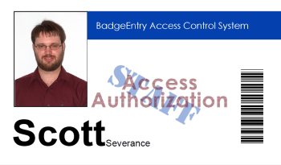

About BadgeEntry
BadgeEntry is designed to be an attendance and access control system for children's activities. Because it is web-based, as many computers as is necessary can access a single install, provided the computers are properly networked. Also, BadgeEntry is pretty much operating system independent. In other words, it runs on Linux, Mac OSX and Windows.
Features
- BadgeEntry is a name tag system with a twist. It produces name tags that contain a barcode and optional photo corresponding to the bearer. This barcode is scanned upon entry and exit. Scanning the barcode serves two main purposes: First, it provides an efficient way to manage attendance. Second, it's fun for the kids to scan their badges and see their name and picture flash on the screen.
- BadgeEntry is an attendance system. It provides both an up-to-date snapshot of current attendance during the meeting and a record of attendance for all events, complete with the time everyone entered and exited.
- Additional features include the ability to select a random "volunteer" from among the current attendees and the ability to assign attendees to several categories (kids, staff, parents, etc.).
System Requirements
BadgeEntry is designed to run by multiple computers. You can run it on as few as two machines (one in a pinch), or as many as you need to handle a large group. Here's how it works (specific details are on the prerequisites page):
- First, you install BadgeEntry on a computer that meets the prerequisites. This computer is now the server.
- Next, you need to designate a computer to serve as kiosk. This is the computer that will scan the barcodes on the badges and display the bearer's name and (optional) photo. If you have a large group, you can set up as many kiosks as you need. In a small setup, the kiosk can easily be the same machine as the server.
- You also need a computer to print the badges and register people. This computer should not double as a kiosk. It needs a printer and a supply of unruled 3x5 inch index cards. If your group is large enough, you might want multiple computers for registration and/or printing.
- Finally, you need a router and a barcode scanner. See the prerequisites page for details.
License
BadgeEntry is free software. That means that you can freely use it, and even modify and distribute it, as long as you adhere to the terms of the licenses. Of course, even though BadgeEntry is free, donations are appreciated, and they encourage me to keep improving this software.
BadgeEntry is distributed in the hope that it will be useful, but WITHOUT ANY WARRANTY; without even the implied warranty of MERCHANTABILITY or FITNESS FOR A PARTICULAR PURPOSE. See the GNU General Public License for more details.